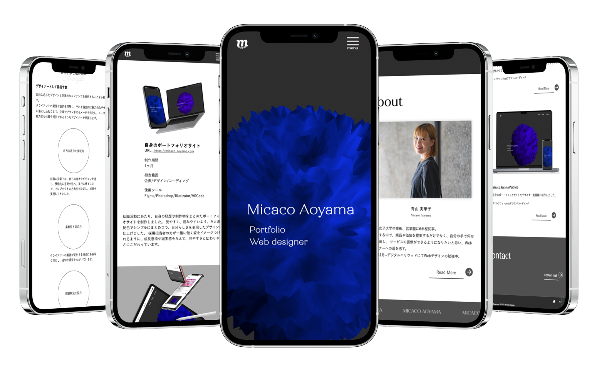

自身のポートフォリオサイト
URL : https://micaco-aoyama.com
- 制作期間
- 1ヶ月
- 担当範囲
- 企画/デザイン/コーディング
- 使用ツール
- Figma/Photoshop/Illustrator/VSCode
転職活動にあたり、自身の経歴や制作物をまとめたポートフォリオサイトを制作しました。 見やすく、読みやすいよう、白と黒の配色でシンプルにまとめつつ、自分らしさを表現したデザインに仕上げました。 採用担当者の方が一緒に働く姿をイメージつけられるように、成長意欲や誠実感を与えて、見やすさと伝わりやすさにこだわっています。

現状課題
半年間の実績であるため、制作物が少なく採用担当者側の判断材料が少ないこと
ターゲット
デザイン制作会社の採用担当者
解決案
コンテンツで自分の強みや考え方、制作物とプロセスを知ってもらい、デザイン面で意欲と誠実感、将来性を感じてもらえるよう意識しました。
課題に対しては、作品の中身を見てもらえるように工夫して構成を組みました。
情報設計
- 視認性の高い情報設計
-
全体的に情報を詰め込まず、余白を意識して読みやすい構成にするため、下記の2軸に絞って構成を組みました。
ポータブルスキル：自分の経歴や強みを踏まえて貢献できる制作物を通して何ができるのか
デザイナーとしてのスキル：制作物を通して、何ができるのか
-
一般的な実績をまとめたポートフォリオではなく、制作までのプロセスを論理的に記載して
「どのようなデザイン」を「どういった考え」で制作まで導けるか明確にし、安心と説得感を与えることを意識しました。
- 使いやすさと効率性
-
画像やコンテンツを最適化して素早く情報にアクセスできるように、ページのロード速度を高めることを意識しました。
またTOPはスクロールの手間を軽減させるため、情報は最低限にして短く作り、ストレスなく情報が閲覧できるようにしています。
デザインのポイント
- レイアウトと視覚的バランス
-
レイアウト全体は制作物が際立つようシンプルな構成にしています。
作品に目がいき、印象や雰囲気も一目でわかるような誠実感のあるデザインを意識しました。
- 誠実感と成長意欲与える
-
ファーストビューには、自分が変化を遂げていく様をアニメーションで抽象的に表現しています。
形や色の変化が移り変わっていくように、自分もデザイナーとして成長し続ける印象を与えました。
-
白黒のシンプルな配色ながら、あしらいやアニメーションを所々に差し込みメリハリをつけて成長意欲の感じる前向きな印象を与えるデザインにしました。
また自分らしさがでるように、Aboutの写真はカードをイメージして制作し、名前と顔をイメージつけやすいデザインに工夫しています。
- 使用カラー


制作の振り返り
- 良かった点
- これまではクライアントからのヒアリングを通して、課題や目的を見出し、デザイン制作を行ってきました。 今回は、自分の強みや魅力を採用担当者に伝えるにあたり、客観的な思考で制作することに難しさを感じました。 シンプルなサイトでありながら、自分らしさも表現するために構成や細かな言葉の言い回しにも気を配り何度もブラッシュアップすることで、洗練されたサイトに仕上がったと思います。 １セクションで文章を考えるにもどのぐらいの時間がかかるのか、クライアント目線で今回取り組むことができたので、今後のクライアントワークにも役立てたいと思います。
- 改善したい点
- 各セクションごとに見やすいテキスト文字数を把握することが難しかったです。特にWorkの制作物ページでは、目的・課題・解決案に大きく棲み分けをしたものの、カテゴリ内の文字数が多すぎて読みにくかったり、逆に短くて伝わりにくく想像以上に時間がかかりました。 伝えたいことから逆算してポイントとなるキーワードを文字に起こし、文章にしていくよう心がけます。
- 今後に向けて
- 今後も制作物の数や自分がアピールした部分は変化していくと思うので、常に最新の状態で情報を更新していきます。